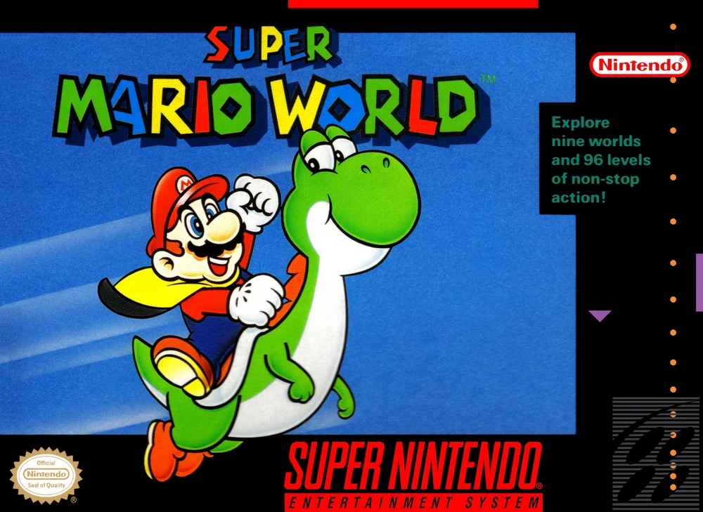
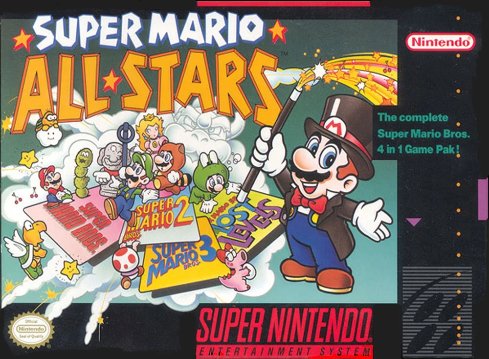
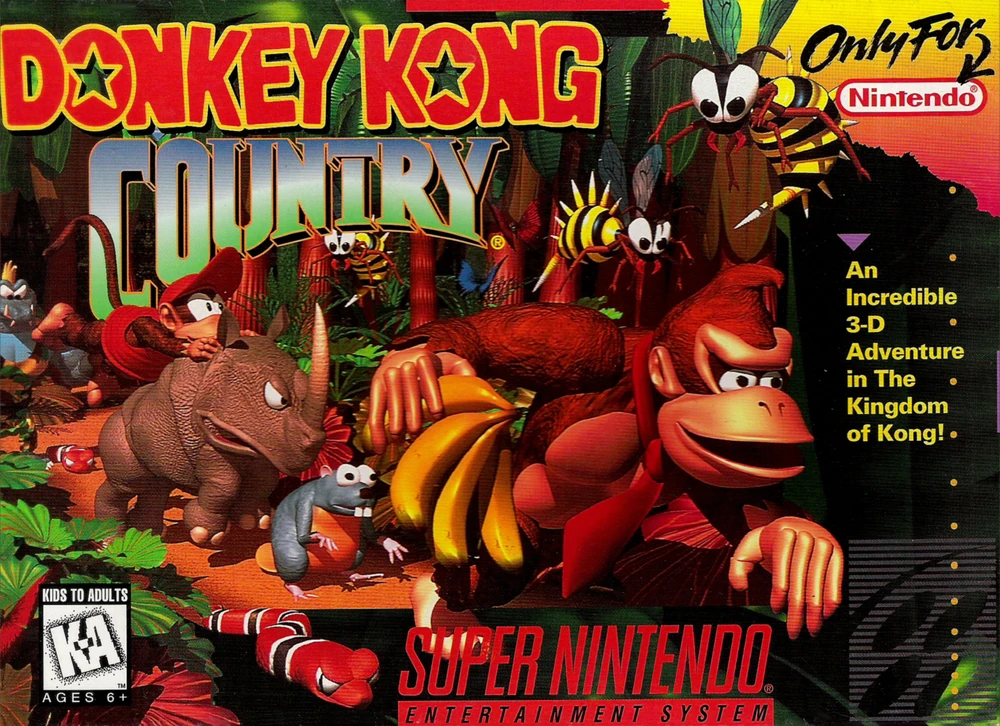
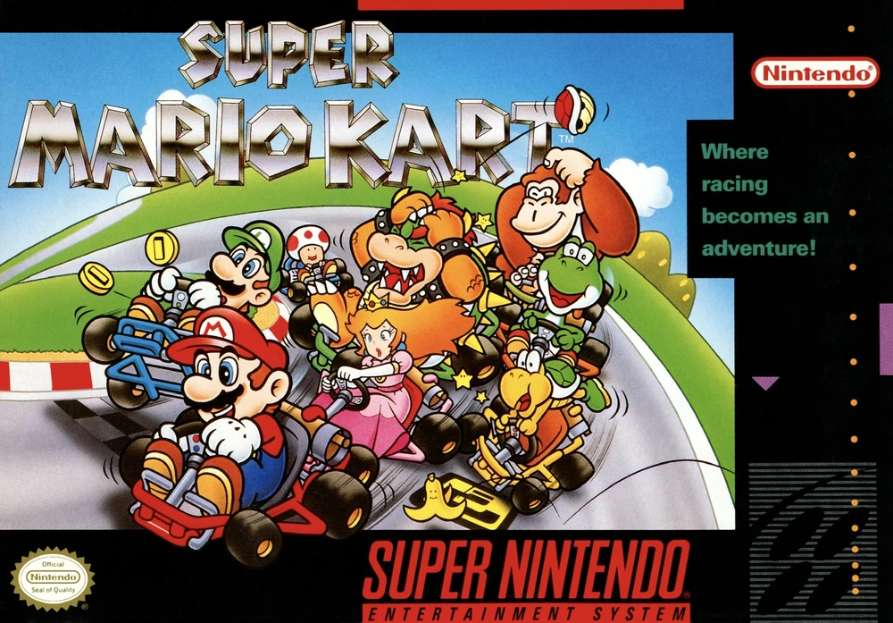
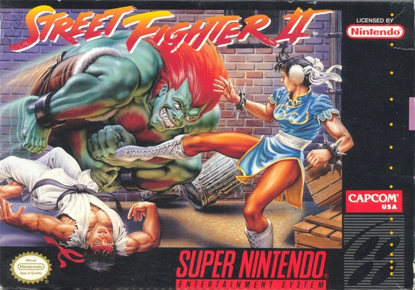
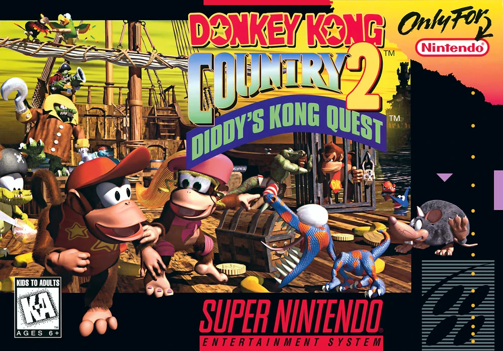
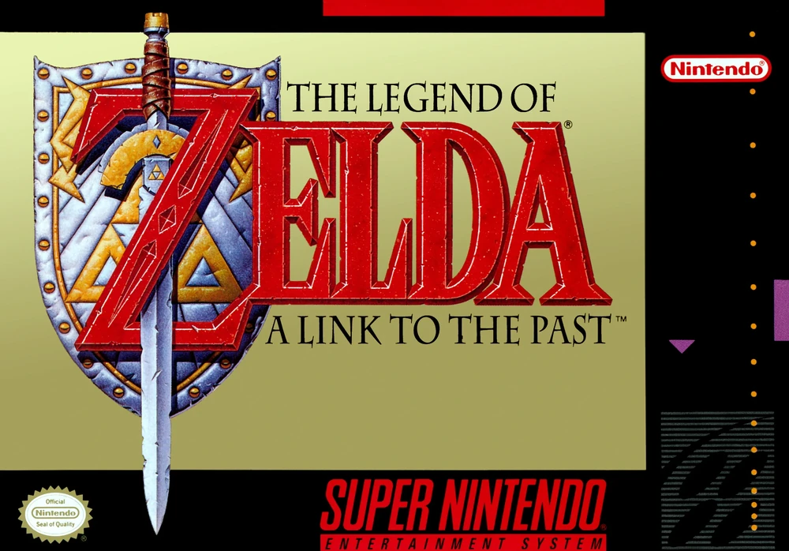

The Super Nintendo Entertainment System (SNES), known in Japan as the Super Famicom, launched on November 21, 1990. It arrived in North America on August 23, 1991, published and manufactured by Nintendo Co., Ltd.. The system was co-distributed globally through regional partnerships, including Hyundai in South Korea and Mattel in Europe.
Launching with Super Mario World, the SNES instantly grabbed attention for its advanced graphics and layered sound. The system featured a custom Ricoh 5A22 CPU and a powerful audio chip co-developed with Sony (the SPC700). It became the heart of Nintendo’s 16-bit generation.
The SNES was Nintendo’s answer to the rising competition from Sega. The resulting "console wars" defined an entire gaming generation. Nintendo emphasized gameplay depth, rich storytelling, and long-term brand loyalty — delivering hits like the ones found below:
It is estimated that the SNES sold approximately 49.1 million units worldwide. In the United States alone, millions of homes owned an SNES by the mid-1990s. It shaped not just gaming, but pop culture, introducing terms, characters, and music that still endure.
Below are the top 7 best-selling SNES titles globally, based on verified shipment data:
| # | Game Title | Copies Sold | Box art |
|---|---|---|---|
| 1 | Super Mario World | ~20.61 million |  |
| 2 | Super Mario All-Stars | ~10.55 million |  |
| 3 | Donkey Kong Country | ~9.3 million |  |
| 4 | Super Mario Kart | ~8.76 million |  |
| 5 | Street Fighter II: The World Warrior | ~6.3 million |  |
| 6 | Donkey Kong Country 2: Diddy's Kong Quest | ~5.15 million |  |
| 7 | The Legend of Zelda: A Link to the Past | ~4.61 million |  |
Depending on region, the SNES had visual and technical differences:
The SNES’s legacy continues through re-releases, emulation, and modern collections. Nintendo’s SNES Classic Edition, launched in 2017, sold over 5 million units worldwide.
IGN consistently ranks the SNES among the top video game consoles ever, citing its timeless library and technical achievements in the 2D era.
Major franchises that thrived on SNES—like Zelda, Metroid, and Final Fantasy—continue today, building on foundations laid during the 16-bit era.
Internet Archive
SMW Central
Atari Team
The largest backup of data available for free on the internet.
The community best known for their incredible work on the SPC700 music and SMW hacking.
They are an incredible community of programmers based on reverse engineering the Atari line of systems.
© 1997 BeetaTech. All rights reserved. BeetaTech is a registered trademark. Unauthorized use, reproduction, or distribution of any content, media, or materials from this website is strictly prohibited without prior written consent. For inquiries, licensing, or permissions, please contact us through our official website: [www.betaplus.com](http://www.betaplus.com)